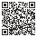
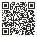

Share and demo
Everything in one place.
One link to send, a five-minute demo you can run from a laptop, codes for phones in the room, and every file to download.
To share it, send one link: mehtama1234.github.io/ASDRP-Neuroscience-Portfolio/ Everything else, including the slides, video, phone tour and both apps, is linked from there.
A five-minute demo
One step per chapter. Or skip the talking and play the four-minute video.
0:00 · Website
Open with the loop.
Open the website. Read the first paragraph out loud, then point at the loop drawing: real life, understand, measure, design, test.
Say: “The same words land one moment and are lost the next. Is that the brain itself?”
0:45 · Chapter 2
Show the mouse result.
Open the mouse study and scroll to the first chart: guesser A against guesser B, in all three mice.
Say: “Knowing the mouse’s state made our guesses 25–33% better, and the gain disappears if the state comes from the wrong moment.”
1:45 · Chapter 3
Show the drift.
Open the EEG study and scroll to the five-stretches chart, then to experiment 2.
Say: “Good on one stretch, a coin flip over time. Even brain-wave bands didn’t fix it, so a tool shouldn’t guess.”
2:45 · Chapter 4
Show the apps.
Open the design chapter, then hold up a phone with Next Step open on the energy question.
Say: “So the app asks how much energy you have, and on a low day shows just the next step.”
3:45 · Chapter 5
Close on what’s next.
Open the last chapter and point at the road ahead.
Say: “Next: the remaining experiments with a mentor, a first paper, and testing the apps with the people they are for.”
Present it
The same story in every format. Pick the one that fits the room.
Slides, full screen
15 slides
Present with arrow keys, or open the presenter view on the laptop for notes and a timer.
Video
About four minutes, with captions
Play it here, or download it below to play offline.
Phone tour
Five chapters, one screen each
Open it, or let people scan the code below.
Codes for phones in the room
Put this page on the screen; people scan with their phone camera.

Phone tourPoint a phone camera at it.
WebsitePoint a phone camera at it.- VideoPoint a phone camera at it.
- SlidesPoint a phone camera at it.
Download and send
Files you can attach to an email, upload, or open with no internet.
Slides
PowerPoint, with speaker notes
Download (1.9 MB). Opens in PowerPoint, Keynote and Google Slides.
Slides
PDF
Download (1.9 MB). For printing or sending.
Video
MP4, full HD
Packet
PDF of all five chapters
Download (1.8 MB). The website as pages.
Android app
The phone tour, installed
How to install. On iPhone, add the phone tour to the home screen instead.
Source code
Everything, rerunnable
The two apps
Live, with made-up examples. Each links back here.
By Amishi Mehta
Next Step
Open Next Step. It can take about 30 seconds to wake up the first time.
Family project
Helper Jobs
Open Helper Jobs. Built for real jobs at Pragnya’s Sunday outings.
Checked before every publish
Every page, chart, drawing, download, the phone tour and the slide viewer are tested automatically before the site goes live, and every number is checked against the saved results. The test · the number check.
Still to add, by Amishi
One real moment for chapter 1, her own essays, who did what, and, if she wants, her voice on the video. Her four steps.